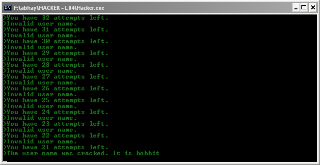

CONNECT [Site Number]
So type in
CONNECT 2
to connect to Amazon.com, and hit Enter.
PNAME
PNAME
stands for ProgramName. As soon as you hit enter, the program shall go
through several permutations and combinations to hack into the name.
The program also, through a malicious code, increases the number of
attempts from 3 to 50, so the chances of hacking are increased.
After you enter the command, you shall face such a screen:

After you crack the name you shall be asked for a password. Here too the similar command,
PPASS
will be used. Type in the command and stand back as you hack into the server.
DIR or LS
DIR is for Windows and DOS based systems, while LS works for UNIX and
LINUX. You may also clear the screen by using the good old CLS
command. The directory structure of each server is different. There
will generally be 2 files, one with an extension of DBF(ie
DataBaseFile). It is this filename you will have to remember.
On my PC, the DIR command, after the CLS command, loks like this:
There are two files, and the one
important for us, is the employee.dbf file. Its name may be different
on your system, but remember the extension dbf. to edit a dbf file, you
need sql support, and fortunately we are provided with miniSQL.
SQL
at the screen, and you shall be taken to miniSQL. miniSQL, is really mini, and only uses commands that we shall use.
The following commands are valid for miniSQL:
q to quit and go back to the previous screen
SELECT [field name] FROM [filename] to read the file
Note:
The Filename should be without the dbf extension. For e.g :employee, NOT employee.dbf
Try the command SELECT now. You shall face such a listing:
The amount range from $227 to
$3660 in our case. Try to be within these limits when you hack, since
the system operator shall notice, if a check goes out for
$20000.Fortunately there is a better way of guessing the amount. Type
in
SELECT AVG FROM [Filename]
The filename will be employee in our case(not employee.dbf). This
command calculates the avg of all checks sent, and displays it.
So
now we know that we have to get ourselves a check of around $1337 to
toe the line. Let us get us $1400 as a round figure. To insert a record
into a table in SQL, we use the INSERT command. Type in
INSERT INTO [Filename]
and you will face this:
The new a/c could be in any
name. But the a/m should be near the average that you get using the
earlier command. The server, supposedly, notices only payments that are
way below or above the average. So now that you have hacked, quitely
slip off the server. First exit SQL by typing 'q' at the prompt. Then get out from the server by typing
EXIT or QUIT
You shall get back to the home page. The amout shall be increased, and you shall have spent a day.
If you do not want to play the entire game in one sitting, type in
SAVE at the home screen to save the game. When you restart, you shall be allowed the option of restoring it from where you left it.